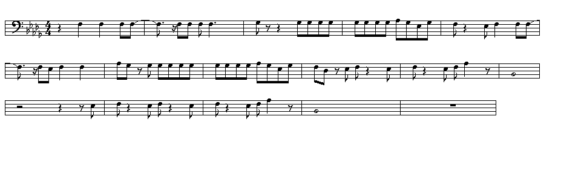
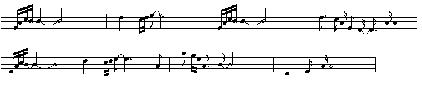

Contents
Trombone Stuff
I play the trombone in band and have used my computer to write out some parts for the trombone that you can play. To print these out save the image and open it up in MS-Paint, then set the Page Setup to the minium margins and print it out. Print out the Lump song in landscape.
Lump

Deep Space Nine Theme

Rodney Beede © 1998
Nothing on any of these web pages may be copied without my written permission.